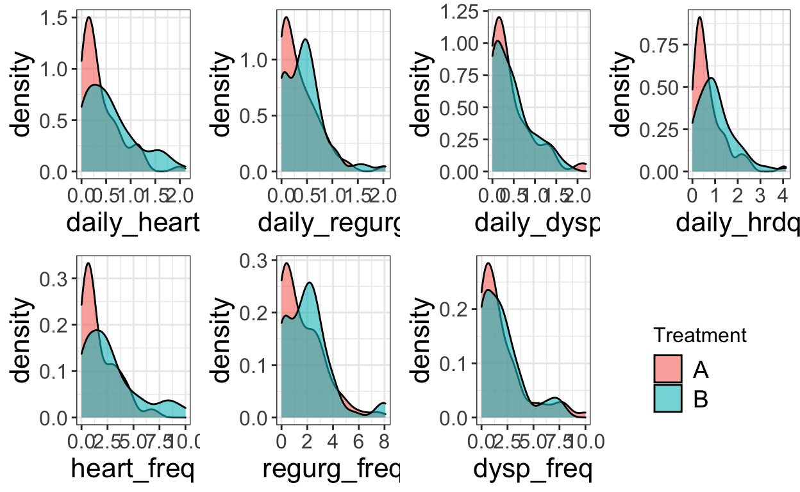

For this post about purrr, I had help from Kellie Ottoboni (@kellieotto) since we both wanted to update our skills. We both took some code from our own research and converted it from its original form (usually with variants of apply) to variants of map. This post talks about that experience, pitfalls we ran into, and cool tricks we learned.
Saras Adventure in the Tidyverse
The goal for the code Im revamping is to simulate data under a variety of scenarios where various parameters change. Within each set of parameters, we want to repeat the simulation multiple times (here KK) so that we can quantify our uncertainty. changeHelper simulates the data and analyzes it.
Its easier to see what is going on if I start with the purrr version because the original code was A MESS.
Note: Im showing pseudocode because this is part of a collaborative project that hasnt been released yet.
require(abind)
changeSim <- function(params, KK){
## for each set of parameters, repeat the simulation KK times
replicateR <- map(rep(list(params), times = KK), changeHelper)
## changeHelper returns a list with two elements: betaStore and lambdaStore
replicateRb <- map(replicateR, ~.x$betaStore)
replicateRl <- map(replicateR, ~.x$lambdaStore)
## or use transpose instead
#output <- replicateR %>% transpose
## organize the output so I can easily process it to make plots
return(list(betas = abind(replicateRb, along = 0), lambdas = abind(replicateRl, along = 0)))
#return(list(betas = abind(output$betaStore, along = 0), lambdas = abind(output$lambdaStore, along = 0)))
}
Not only does purrr help simplify running the simulations, it also helps me set up the possible values of parameters. I want to keep most aspects of the simulation the same but change one aspect at a time.
betaOpt <- seq(0.1,3,by=.3)
N <- 100
## get list of parameter sets
## the variables in toChange are the things I'm varying in this case study
inputChangeBetaSim <- map(betaOpt,
~ list(toChange = list(v = rep(0.2, times = N), lambda = 0.5, beta =.x),
predVT= T, respVT = T, N = N, mu = 5, var = 1.3, alpha = -0.2, n = rpois(N,10), sigma = 1))
## apply list of parameter sets to the simulation function
changeBetaR <- map(inputChangeBetaSimLL, changeSim, KK)
## get the separate pieces that I need out of the output
betas <- map(changeBetaR, ~ .x$betas)
lambdas <- map(changeBetaR, ~ .x$lambdas)
## or we could use transpose
output <- changeBetaR %>% transpose
## transpose goes from this:
changeBetaR[[1]]$betas
changeBetaR[[1]]$lambdas
## to this:
output$betas[[1]]
output$lambda[[1]]
It is possible to get a simulated data set that give the analysis method trouble. To avoid having one error ruin a whole map statement, we can use possibly to fill in blank output if we run into an error in the analyzeData function. This is an alternative to tryCatch and (in my opinion) is easier to remember.
carefulAnalyzeData=possibly(analyzeData,list(betaStore=NA,lambdaStore=NA)) ## an alternative to tryCatch
changeHelper <- function(params){
## simulate data
data=simData(params)
## analyze simulated data
#results = analyzeData(data)
#results=tryCatch(analyzeData(data),error=function(e){list(betaStore=NA,lambdaStore=NA)})
results=carefulAnalyzeData(data)
return(results)
}
To improve performance, I can choose the slowest map statement and run it in parallel using furrr (akin to mclapply).
Note: Im doing this on a Mac, so the plan code may differ on a PC.
require(furrr) # future purrr
plan(cluster,workers=makeCluster(2))
#plan(multiprocess) # will use all available cores
changeBetaR <- future_map(inputChangeBetaSimLL, changeSim, KK)
Now on to the original version. Brace yourself!
Originally, all but the parameter I was changing was hard coded into a file that I sourced in changeHelper. This required separate functions depending on which parameter I was changing, and if I wanted to change the other aspects of the simulation, I had to make sure I changed the value everywhere so the results would be comparable. You can imagine how this worked out.

changeSim <- function(betaOpt, KK){
betaOptR <- lapply(rep(betaOpt, times = KK), changeBetaHelper)
betaOptRb <- lapply(betaOptR, function(x){x$betaStore})
betaOptRl <- lapply(betaOptR, function(x){x$lambdaStore})
return(list(betas = abind(betaOptRb, along=0),lambdas = abind(betaOptRl, along = 0)))
}
changeBetaR <- lapply(betaOpt, changeBeta, KK)
betas <- lapply(changeBetaR, function(x){x$betas})
lambdas <- lapply(changeBetaR, function(x){x$lambdas})
To be fair this used to all be loops, so making the step towards lapply was progress.
Recapping what changed:
lapply>mapfunction(x){x$var} > ~.x$var
hard coded aspects requiring many different source files > use
mapto generate sets of parameters where only a few things changetransposeto re-organize the two outputs
Verdict
Overall, I found the transition to purrr more straightforward than the transition to other packages in the tidyverse that Ive learned so far. It definitely helped that I had forced myself to use the apply family of functions more often leading up to this. I wasnt expecting the extra benefit of possibly and transpose but I can definitely see myself using them into my work moving forward.
One annoying thing I ran into is that my R session got confused between map in the maps package and map in purrr. I ended up just using purrr::map to avoid any issues, but if I would have just required purrr after maps, the default map would be the purrr one.
Kellies Adventure in the Tidyverse
Ive rewritten some code that I used to analyze a dataset from a clinical trial. The data needed to be reshaped before it could be pumped into the usual linear model functions. There were seven clinical endpoints, each of which we analyzed individually to determine whether two treatments differed in their effect on patients GERD symptoms. Originally, I looped over each variable using apply.
The original code is here if you want to take a look. First, lets read in the data and have a look at it.
require(grid)
require(gridExtra)
library(tidyverse)
datafile <- "https://raw.githubusercontent.com/kellieotto/ancova-permutations/master/data/clinical_cleaned.csv"
clinical <- read.csv(datafile, header = TRUE, stringsAsFactors = FALSE)
head(clinical)
SUBJID SITEID VISITNUM tr country heart_sev regurg_sev dysp_sev
1 1 1 1 A 1 1.428571 1.428571 1.571429
2 1 1 2 A 1 1.428571 1.285714 2.142857
3 2 1 1 B 1 2.714286 2.571429 2.000000
4 2 1 2 B 1 2.285714 2.285714 1.857143
5 3 1 1 A 1 2.000000 1.857143 1.714286
6 3 1 2 A 1 1.857143 1.285714 1.142857
heart_freq regurg_freq dysp_freq daily_heart daily_regurg
1 3.642857 4.285714 3.928571 0.8000000 0.8149357
2 3.642857 3.428571 5.571429 0.7831171 0.6688314
3 8.142857 7.500000 5.071429 1.9732257 1.7942057
4 8.571429 8.071429 5.642857 1.6983043 1.6619400
5 5.500000 1.285714 3.785714 1.2353657 0.5285714
6 3.428571 1.142857 2.214286 1.0000000 0.3785714
daily_hrdq daily_dysp
1 1.614936 0.9000000
2 1.451949 1.3883129
3 3.767431 1.2201314
4 3.360239 1.2595414
5 1.763937 0.8441571
6 1.378571 0.5428571We have measurements at two timepoints for each patient, and we want to control for the first measurement as a covariate in the regression model that estimates the effect of treatment on the outcome. To do this in R, the values need to be in separate columns. We need to reshape the data, hooray! For whatever reason, this is something I have a lot of trouble with conceptually. This step took me longer than anything involving purrr
You get a bonus tidyverse example: in this function, I changed old reshape2 code to use tidyr instead. The function turns the data from long into wide format and selects only the relevant columns. The result is a dataframe for the clinical endpoint of interest, with one baseline column and an outcome column, in addition to other variables to put in the model. Previously, this function did something hacky to pick out the variable of interest, then used the dcast function to reshape. The reshape2 package used formula syntax to specify keys and values; I find the syntax of tidyr::spread to be more straightforward.
# Group the data to treat person (SUBJID) and first/second visit (VISITNUM) as a single observation
data_by_subjid_visitnum <- clinical %>% group_by(SUBJID, VISITNUM)
reshape_data <- function(variable){
# Reshape data to be analyzed with regression
# Inputs:
# variable = the clinical endpoint of interest, input as a string
# Output:
# A dataframe with a single row per subject and columns for treatment, site ID, baseline + outcome measures
cleaned <- data_by_subjid_visitnum %>%
select_("VISITNUM", "SUBJID", "tr", "SITEID", variable) %>% # Pull out the columns we want
tidyr::spread_(key = "VISITNUM", value = variable) # Turn VISITNUM into columns, with value equal to measure
colnames(cleaned) <- c("SUBJID", "tr", "SITEID", "Baseline", "Outcome")
cleaned <- ungroup(cleaned) %>%
mutate(difference = Outcome - Baseline) # Ungroup and create a difference column
return(cleaned)
}
Now, instead of applying this function to each of the seven clinical endpoints, I used purrr::map. So clean!
# Reshape each variable, store in a list
continuous_vars <- c("daily_heart", "daily_regurg", "daily_dysp",
"daily_hrdq", "heart_freq", "regurg_freq", "dysp_freq")
reshaped_data <- continuous_vars %>% map(reshape_data)
head(reshaped_data[[1]])
# A tibble: 6 x 6
SUBJID tr SITEID Baseline Outcome difference
<int> <chr> <int> <dbl> <dbl> <dbl>
1 1 A 1 0.8 0.783 -0.0169
2 2 B 1 1.97 1.70 -0.275
3 3 A 1 1.24 1 -0.235
4 4 B 1 1.54 1.54 0
5 5 A 1 1.21 1.11 -0.0935
6 6 B 1 1.16 0.913 -0.243 Now I want to visualize the distribution of these variables in each treatment group. Same idea: Im going to make the same kind of plot for each clinical endpoint by writing a plot function that I run for each variable. Previously, I used apply. Now, I want to loop over the reshaped data and the variable names (so each plot is labeled appropriately). I used map2 for this: it just maps a function over two vectors of paired arguments. The first vector is the datasets and the second vector is the variable names.
# Plot the distribution of Outcome for each variable
plot_distributions <- function(dataset, varname){
p <- dataset %>%
mutate(tr = factor(tr)) %>%
ggplot(aes(Outcome)) +
geom_density(alpha = 0.6, aes(fill = tr))+
labs(x = varname, fill = "Treatment") +
theme_bw() +
theme(
axis.text.x = element_text(size = 12),
axis.text.y = element_text(size = 12),
axis.title = element_text(size = 16),
title = element_text(size = 16),
legend.title = element_text(size = 12),
legend.text = element_text(size = 14),
strip.text.x = element_text(size = 12)
)
return(p)
}
# Create a list containing a plot for each variable
all_plots <- map2(reshaped_data, continuous_vars, plot_distributions)
Ok, now a tricky step. Each plot has its own legend. I want to put all seven plots in one figure and just use one legend. Basically, you can grab just the legend element from one of the plots, remove it from all of the plots, then slap that saved legend wherever you want. Thats what I do below, again using map to set legend.position="none" on each of the plots. I put the seven plots in a 2x4 grid, then put the legend in the open 8th spot.
# Move the legend
tmp <- ggplot_gtable(ggplot_build(all_plots[[1]]))
leg <- which(sapply(tmp$grobs, function(x) x$name) == "guide-box")
legend <- tmp$grobs[[leg]]
# Remove the legend from each plot, then stick it at the end of the plot list
all_plots <- all_plots %>% map(function(x) x + theme(legend.position="none"))
all_plots[[length(all_plots)+1]] <- legend
do.call(grid.arrange, c(all_plots, nrow = 2))

Verdict
Incorporating pipes in my code has made things infinitely more legible, and purrr::map just makes things even clearer. Throwing an apply in the middle of a pipe sequence kind of breaks the flow of reading from left to right. I think I will keep using map going forward!
purrr has so many more capabilities than just map and map2, though. I didnt have the opportunity to explore all those other functions in this code, and to be frank I cant think of examples from my work that would require using more complicated mapping functions. However Im sure they are super useful.
We did it!

Feedback, questions, comments, etc. are welcome (@sastoudt @kellieotto). Tell us about your own purrr conversion!